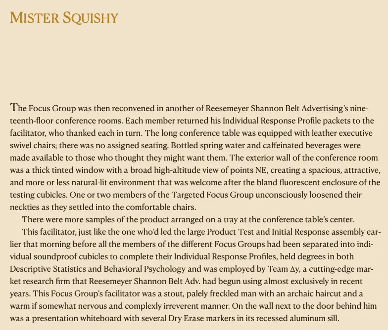
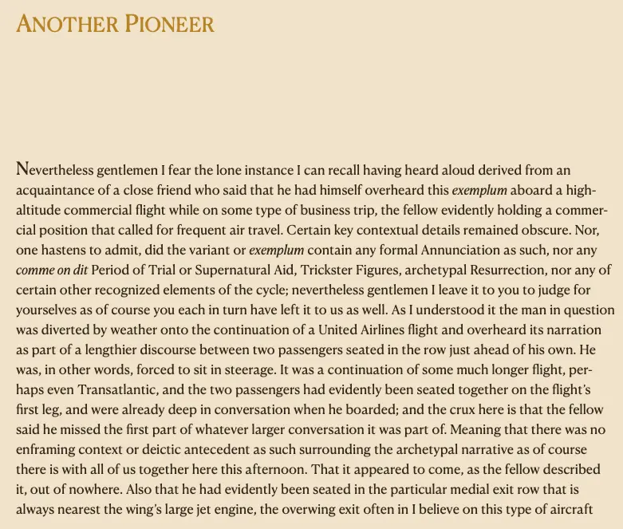
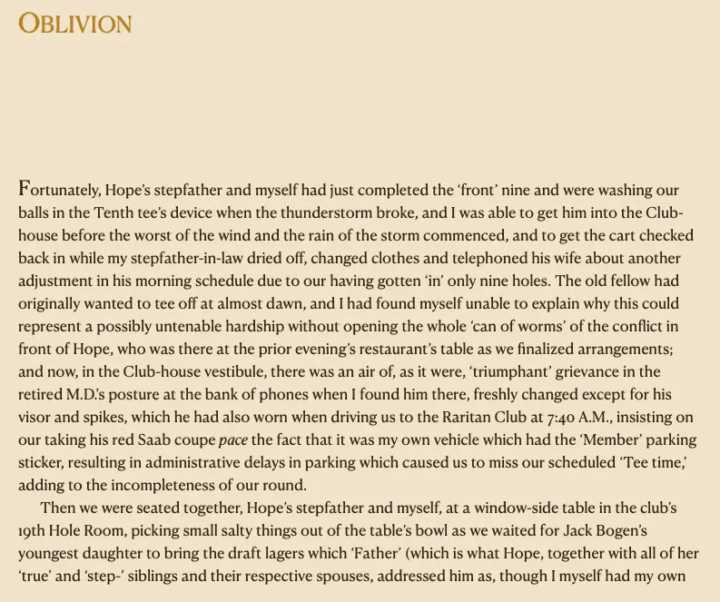
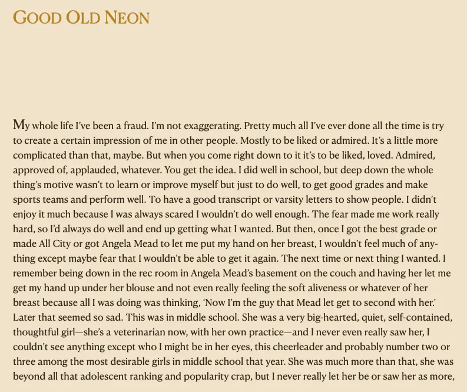

- 2025-08-04
- Parent page - David Foster Wallace (parent page)
- I think partly, there’s just this dizzying sense of being with someone who is an incredible intellect. Like, I had never (and have never, not that I have read that much fiction) experienced writing like this before. It feels like peeking into an entirely different way of existing. And as someone who grew up feeling relatively intelligent, and relatively good at writing, there was a sense both of kinship but also of deep awe
- Also, David isn’t just a flashy “show off” writer. (E.g., I tried reading Dave Eggers and couldn’t stand him, and Jonathan Franzen often sounds really pompous and overwrought IMO (not Crossroads though, Crossroads is brilliant). He’s incredibly humane.
- This line stuck with my ever since I first read it:
- Something like, from the short story “The Suffering Channel”, w/r/t a socially awkward/stilted man: “the more perceptive amongst them could tell that it had took him a lot to reach this point”
- Aha, here it is: "A few of the sharper interns intuited that he'd had to overcome a great deal in himself in order to get this far"
- That is just one of many instances of DFW’s heart and perceptiveness, IMO. Empathy, compassion.
- This line stuck with my ever since I first read it:
- Also, David isn’t just a flashy “show off” writer. (E.g., I tried reading Dave Eggers and couldn’t stand him, and Jonathan Franzen often sounds really pompous and overwrought IMO (not Crossroads though, Crossroads is brilliant). He’s incredibly humane.
Showing the intellect
The first page of the first story (Mister Squishy)
- The first thing of DFW’s that I ever read. I was blown away immediately, which might be surprising given that it’s about a focus group trying a new like, twinkie-thing


Oblivion

Showing the heart
Good Old Neon

- Gathering quotes showing DFW’s humaneness is a project I don’t have time for right now!!!
- Unless I have a kindle copy of any of his books where I’ve highlighted passages 👀
- Ayyyy, I do! I have Infinite Jest and Oblivion
On loneliness and language
- From Good Old Neon, where the main character is talking about the moment of his death
This is another paradox, that many of the most important impressions and thoughts in a person’s life are ones that flash through your head so fast that fast isn’t even the right word, they seem totally different from or outside of the regular sequential clock time we all live by, and they have so little relation to the sort of linear, one-word-after-another-word English we all communicate with each other with that it could easily take a whole lifetime just to spell out the contents of one split-second’s flash of thoughts and connections, etc.—and yet we all seem to go around trying to use English (or whatever language our native country happens to use, it goes without saying) to try to convey to other people what we’re thinking and to find out what they’re thinking, when in fact deep down everybody knows it’s a charade and they’re just going through the motions. What goes on inside is just too fast and huge and all interconnected for words to do more than barely sketch the outlines of at most one tiny little part of it at any given instant.
You already know the difference between the size and speed of everything that flashes through you and the tiny inadequate bit of it all you can ever let anyone know. As though inside you is this enormous room full of what seems like everything in the whole universe at one time or another and yet the only parts that get out have to somehow squeeze out through one of those tiny keyholes you see under the knob in older doors. As if we are all trying to see each other through these tiny keyholes.
The tedious solipsism of ~depression
- Again, from Good Old Neon. He also talks about this in the short story “The Depressed Person”
However tedious and sketchy all this is, you’re at least getting an idea, I think, of what it was like inside my head. If nothing else, you’re seeing how exhausting and solipsistic it is to be like this. And I had been this way my whole life, at least from age four onward, as far as I could recall. Of course, it’s also a really stupid and egotistical way to be, of course you can see that.
Cliches are banal vs cliches signify profound truths
Fuck it, let’s go to Goodreads
“How odd I can have all this inside me and to you it’s just words.”
“What passes for hip cynical transcendence of sentiment is really some kind of fear of being really human, since to be really human […] is probably to be unavoidably sentimental and naïve and goo-prone and generally pathetic.”
- ☝️ oh dude he was so afraid of being sentimental, big theme in interviews
“It now lately sometimes seemed a black miracle to me that people could actually care deeply about a subject or pursuit, and could go on caring this way for years on end. Could dedicate their entire lives to it. It seemed admirable and at the same time pathetic. We are all dying to give our lives away to something, maybe.”
“Maybe it’s not metaphysics. Maybe it’s existential. I’m talking about the individual US citizen’s deep fear, the same basic fear that you and I have and that everybody has except nobody ever talks about it except existentialists in convoluted French prose. Or Pascal. Our smallness, our insignificance and mortality, yours and mine, the thing that we all spend all our time not thinking about directly, that we are tiny and at the mercy of large forces and that time is always passing and that every day we’ve lost one more day that will never come back and our childhoods are over and our adolescence and the vigor of youth and soon our adulthood, that everything we see around us all the time is decaying and passing, it’s all passing away, and so are we, so am I, and given how fast the first forty-two years have shot by it’s not going to be long before I too pass away, whoever imagined that there was a more truthful way to put it than “die,” “pass away,” the very sound of it makes me feel the way I feel at dusk on a wintry Sunday—’
‘And not only that, but everybody who knows me or even knows I exist will die, and then everybody who knows those people and might even conceivably have even heard of me will die, and so on, and the gravestones and monuments we spend money to have put in to make sure we’re remembered, these’ll last what—a hundred years? two hundred?—and they’ll crumble, and the grass and insects my decomposition will go to feed will die, and their offspring, or if I’m cremated the trees that are nourished by my windblown ash will die or get cut down and decay, and my urn will decay, and before maybe three or four generations it will be like I never existed, not only will I have passed away but it will be like I was never here, and people in 2104 or whatever will no more think of Stuart A. Nichols Jr. than you or I think of John T. Smith, 1790 to 1864, of Livingston, Virginia, or some such. That everything is on fire, slow fire, and we’re all less than a million breaths away from an oblivion more total than we can even bring ourselves to even try to imagine, in fact, probably that’s why the manic US obsession with production, produce, produce, impact the world, contribute, shape things, to help distract us from how little and totally insignificant and temporary we are.”